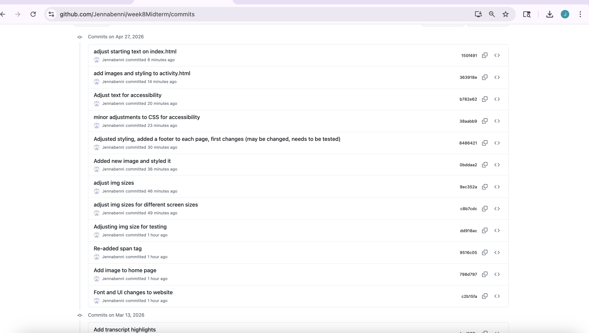

Jenna Blubaugh's Portfolio

To view previous projects, please select the button at the top of each textbox
See Act on Activities
Act on Activities is a website for individuals who are unsure of what they want to do in the day, and can take a quiz and schedule activities on their account.
Tech Stack
HTML, CSS, and JavaScript were utilized in the creation of this website, and Firebase was used for the database. Deployed on Netlify.
Previous Site
Changes
UI was improved for the website to include more images and styles to move away from plain color boxes. Gradients, fonts, highlight colors were among the features added, as well as more images on index.html and activity.html.
Below shows the Github commit history

See Magicoffee
Magicoffee is a four page website created for a fictional coffee shop with a magical theme. The creation of this website was assisted by Claude and utilized an MCP server for the generation of images.
Tech Stack
HTML, CSS, and JavaScript were utilized in the creation of this website. Deployed on Netlify.
What would've been done differently
While this website has its charms, the usage of emojis make it clear that AI had been used, and can create a negative opinion around the website. More icons could've been utilized, but overall this is a finished, polished piece.
New Feature
See What am I Worth?
"What am I Worth" is a mini-project used to help web developers use the three pricing models of hourly, flat, and value-based to determine what they should be charging for a website or application.
Tech Stack
HTML, CSS, and JavaScript were utilized in the creation of this website. Deployed on GitHub Pages